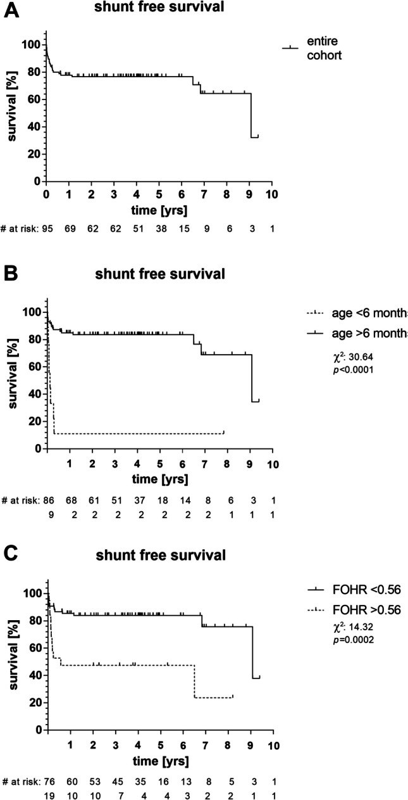
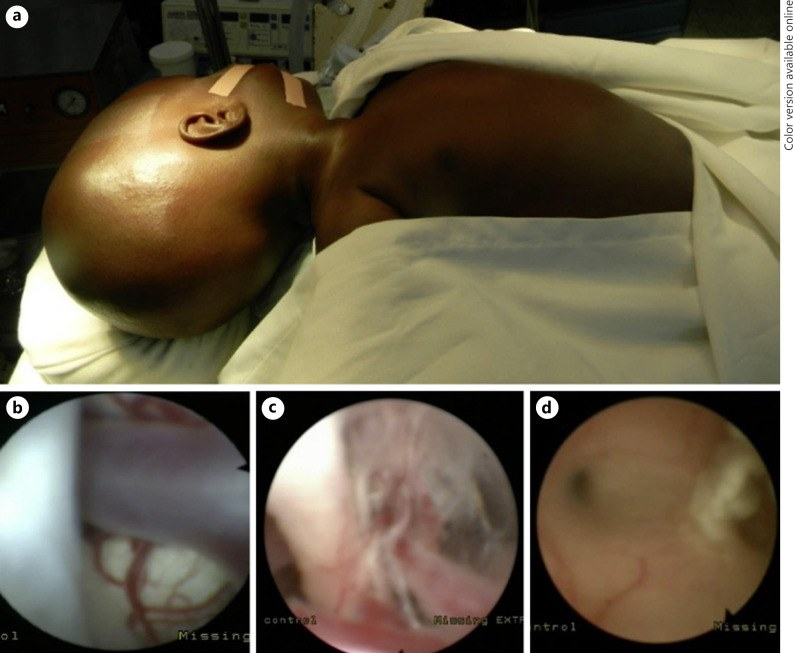
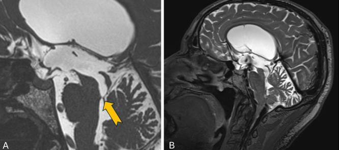
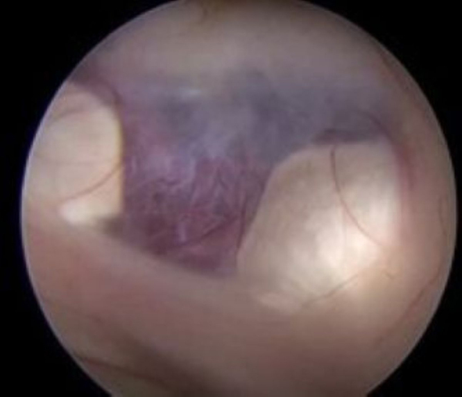
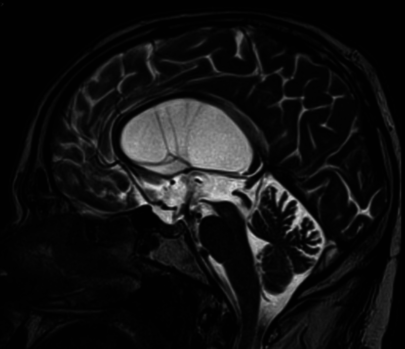
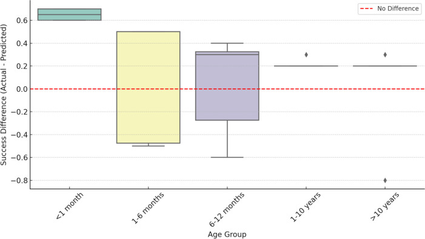

3007 — Mở thông não thất III qua nội soi ở trẻ (ETV/ETV-CPC): chọn bệnh nhân bằng MRI + điểm ETVSS, và đọc đúng "lỗ thông" sau mổ / Endoscopic third ventriculostomy in children: patient selection, ETV Success Score, and imaging of the stoma
Tags: pattern:gian-nao-that pattern:tac-nghen-dong-chay pattern:tac-cong-sylvius pattern:thoat-vi-hanh-nhan vung:nao-that vung:be-truoc-cau vung:cong-sylvius anatomy:san-nao-that-ba score:ETVSS score:FOHR incidentaloma:khong protocol:MRI-lat-mong protocol:FIESTA-CISS protocol:phase-contrast protocol:CT-so-nao protocol:noi-soi-than-kinh
Mức chắc chắn (certainty): tổng hợp y văn (literature synthesis) — số liệu lấy từ các bài open-access đã đọc toàn văn: Møen EN et al., Brain Spine 2025;5:104291 (PMC12171757, CC BY 4.0 — 127 ca tại một trung tâm + tổng quan hệ thống 64 báo cáo/8.409 ca); Tatoshvili D et al., Childs Nerv Syst 2024;41:57 (PMC11649818, CC BY 4.0 — 95 ETV, mô hình lâm sàng + FOHR + sàn não thất phồng, AUC 0,8082); Krause M et al., Childs Nerv Syst 2024;41:72 (PMC11681997, CC BY 4.0 — 54 trẻ, bảng ETVSS của Kulkarni); Castro P et al., Childs Nerv Syst 2025;41:250 (PMC12310776, CC BY 4.0 — NSQIP-P: 2.543 ETV vs 10.135 shunt); Diallo O et al., Pediatr Neurosurg 2023;58:38–44 (PMC10064391, CC BY 4.0 — 199 nhũ nhi ETV/CPC ở Mali); Van Rijen SRM et al., Childs Nerv Syst 2025;41:115 (PMC11836075, CC BY 4.0 — 54 trẻ < 3 tháng); Ahmed I et al., Surg Neurol Int 2025;16:205 (PMC12134809, CC BY-NC-SA 4.0 — 663 ca thất bại ETV); Łajczak A et al., Childs Nerv Syst 2025;41:297 (PMC12479695, CC BY 4.0 — meta machine learning); Neri N et al., J Neurosurg Case Lessons 2025;10(3):CASE2531 (PMC12278952, CC BY-NC-ND 4.0 — ca nguyên văn "flow void giả"). Bài không có ca nguyên văn riêng của nhóm; ca 1–3 là ca nguyên văn/minh họa của nguồn, ghi rõ Fig.
Câu hỏi gốc của bài: bé 4 tháng tuổi, đầu to nhanh, MRI thấy giãn ba não thất, cống Sylvius hẹp, bể trước cầu còn thông. Ba câu hỏi: (1) có làm ETV được không, hay phải đặt shunt; (2) nếu làm ETV, khả năng thành công bao nhiêu % và tính bằng điểm nào; (3) sau mổ, trên MRI thấy "vệt đen" ở sàn não thất ba — đó là lỗ thông thật hay chỉ là dòng chảy giả?
1. Tổng quan — vì sao "chọc một lỗ ở sàn não thất ba" lại chữa được não úng thủy
A. Bệnh học (pathology) và cơ chế:
- Định nghĩa: mở thông não thất III qua nội soi (endoscopic third ventriculostomy, ETV) = tạo lỗ thủng ở sàn não thất ba để dịch não tủy (DNT) từ não thất ba chảy thẳng vào bể trước cầu, bỏ qua cống Sylvius và não thất IV. Đây là dẫn lưu sinh lý nội sọ, không đặt ống nước ngoài.
- Điều kiện để ETV "chữa được": (1) tắc nghẽn NẰM TRONG đường DNT (cống Sylvius, não thất IV, lỗ thoát não thất IV, nang Blake/Dandy–Walker) — tức giãn não thủy tắc nghẽn (obstructive/non-communicating); (2) hấp thu DNT ở màng nhện còn tốt; (3) bể trước cầu THÔNG để DNT có chỗ đi. Thiếu (2) hoặc (3) → ETV thất bại sớm, dù mổ kỹ thuật tốt.
- Vì sao giãn não thủy "thông thương" (communicating) không hợp ETV: tắc nghẽn ở màng nhện/hấp thu, không phải ở đường dẫn — mở lỗ sàn não thất ba không giải quyết được chỗ tắc. Đây là lý do số một khiến ETV thất bại vì chọn sai bệnh nhân, không phải vì kỹ thuật.
- ETV-CPC (ETV + đốt đám rối mạch mạc): thêm đốt đám rối mạch mạc (choroid plexus cauterization) để giảm sản xuất DNT; dùng chủ yếu ở nhũ nhi — nhóm mà ETV đơn thuần có tỉ lệ thất bại cao nhất. Trong loạt 199 nhũ nhi ở Mali: 47% (94/199) không cần shunt sau ETV/CPC; tỉ lệ thành công 69% ở 6–12 tháng, 54% ở 3–6 tháng, chỉ 29% ở ≤ 3 tháng; nhiễm trùng sau mổ 1%, tử vong 12 tháng 8% (PMC10064391).
- Vì sao tuổi là yếu tố mạnh nhất: ở trẻ rất nhỏ, màng nhện chưa trưởng thành/hấp thu kém và đầu chưa cốt hóa nên áp lực nội sọ thay đổi nhanh; trong loạt 95 ETV của PMC11649818, trẻ > 6 tháng có tỉ lệ không phải đặt shunt sau 1 năm 84,8% so với 11,1% ở trẻ < 6 tháng (P < 0,001) — chênh lệch lớn nhất trong mọi biến số.

Kaplan–Meier thời gian không phải đặt shunt sau ETV (95 ca). (A) Toàn bộ: 1 năm 77,8%, 5 năm 76,6% — nghĩa là thất bại muộn ít sau khi đã qua 1 năm đầu. (B) Theo tuổi: > 6 tháng 84,8% / 83,5% (1 năm / 5 năm) so với 11,1% / 11,1% ở < 6 tháng (χ² = 30,64; P < 0,001). (C) Theo FOHR**: ≤ 0,56 → 85,4% / 83,9% so với 47,4% / 47,4% khi **> 0,56 (χ² = 14,32; P < 0,001). Nguồn: Tatoshvili D et al., Childs Nerv Syst 2024;41:57, PMC11649818 Fig. 1, CC BY 4.0.- Vì sao phải có mô hình dự báo: ETV thất bại muộn (tháng–năm) và thất bại sớm đều dẫn tới đặt shunt; biết trước xác suất giúp tư vấn gia đình và chọn ETV hay shunt ngay từ đầu. Công cụ chuẩn là ETV Success Score (ETVSS) của Kulkarni (tuổi + nguyên nhân + đã có shunt trước đó), tổng 0–100: 90–100 = khả năng cao, 70–80 = trung bình, ≤ 60 = thấp (bảng trong PMC11681997, Table 1). Nghiên cứu 54 trẻ cho thấy thành công thực tế 88% so với 73% ETVSS dự báo (p = 0,035), và nhóm > 1 tuổi gần 100% (PMC11681997) → ETVSS dự báo khá "bi quan" ở trẻ nhỏ, nhưng vẫn là công cụ tư vấn chuẩn.
- Vì sao ảnh hưởng của "hình thái" quan trọng hơn "kích thước": sàn não thất ba phồng xuống (bulged lamina terminalis/floor) = còn chênh áp lực trong–ngoài → dễ chọc và dự báo thành công (OR 4,59, 95% CI 1,15–19,6); não thất càng giãn lớn (FOHR cao > 0,56) lại dự báo xấu hơn (1 năm không shunt 47,4% vs 85,4%) (PMC11649818). Nghĩa là "não thất to" không đồng nghĩa "ETV dễ thành công".
- Vì sao "flow void" là dấu hiệu trung tâm sau mổ: dòng DNT qua lỗ thông có vận tốc cao, chảy rối → mất tín hiệu (signal void) trên T2/FIESTA theo nguyên lý dephase spin chuyển động nhanh. Nhưng mất tín hiệu cũng xuất hiện khi sàn não thất ba mỏng rung theo mạch đập hoặc DNT chảy qua lỗ Monro — đó là "flow void giả (pseudo-flow void)", không phải lỗ thông thật (PMC12278952). Vì vậy đọc flow void một mình là bẫy.
B. Ngưỡng định lượng bắt buộc (cửa 1 Argon):
| Đại lượng | Con số đã kiểm chứng | Ý nghĩa thực hành |
|---|---|---|
| Thành công gộp | 73,4% (64 báo cáo, 8.409 ca); biến chứng 11,6% (PMC12171757) | Con số để tư vấn: 3/4 thành công |
| Tại một trung tâm | 78,7% thành công, 21,3% biến chứng (127 ca, tuổi 0–86) (PMC12171757) | Trung tâm nhỏ có thể ngang chuẩn |
| Biến chứng cụ thể | rò DNT 3,94%, nhiễm trùng 3,94%, dùng EVD 3,94%, biến chứng 30 ngày 21,26% (PMC12171757) | Phần lớn thoáng qua, không di chứng |
| Cải thiện triệu chứng | 83,3% giảm triệu chứng ở lần tái khám đầu (thường 3 tháng) (PMC12171757) | Đánh giá lâm sàng trước, không chỉ ảnh |
| Trẻ < 6 tháng | 1 năm không shunt 11,1% vs 84,8% ở > 6 tháng; 5 năm 11,1% vs 83,5% (P < 0,001) (PMC11649818) | Tuổi là biến số mạnh nhất |
| FOHR | ≤ 0,56 → 85,4% không shunt/1 năm vs 47,4% khi > 0,56 (P < 0,001); OR 6,09 (2,16–16,33) (PMC11649818) | Đo FOHR trên MRI trước mổ |
| Mô hình 4 biến | tuổi > 6 tháng OR 29,25; sàn não thất phồng OR 4,59; FOHR nhỏ; không tắc lỗ não thất IV OR 0,31; AUC 0,8082 (PMC11649818) | Đủ 4 tiêu chí → 92% không shunt |
| ETVSS | 0–100; ≥ 80 → 84% không shunt trong loạt 95 ca (PMC11649818) | Mô hình 4 biến nhỉnh hơn ETVSS (92% vs 84%) |
| ETVSS — thành phần | Tuổi: < 1 tháng 0 · 1–<6 tháng 10 · 6–<12 tháng 30 · 1–<10 tuổi 40 · ≥ 10 tuổi 50; nguyên nhân: sau nhiễm trùng 0 · MMC/IVH/u không phải tuyến tùng 10 · khác 30 · hẹp cống/u tuyến tùng 40; đã có shunt 0, chưa có 10 (PMC11681997, Table 1) | Cộng điểm trước khi mổ |
| ETV-CPC ở nhũ nhi | 47% (94/199) không shunt; 69% / 54% / 29% theo 6–12 / 3–6 / ≤ 3 tháng (PMC10064391) | Ở ≤ 3 tháng, ETV/CPC vẫn chỉ ~1/3 |
| Trẻ < 3 tháng | 54 ca: 42 cần điều trị vĩnh viễn (28 shunt, 14 ETV); thất bại shunt 32,1%, thất bại ETV 50% (PMC11836075) | Nhóm này khó nhất, tỉ lệ thất bại cao |
| 30 ngày sau mổ (NSQIP-P) | ≤ 6 tháng: mổ lại 17,4% vs shunt 4,8%, nhập viện lại 15,7% vs 6,1%, co giật 6,3% vs 0,4% (P < 0,001); ≥ 2 tuổi: tử vong 0,4% vs 1,5% (PMC12310776) | ETV "trả giá" ngắn hạn ở trẻ nhỏ, lợi ở trẻ lớn |
| Thất bại ETV rồi làm gì | 663 ca: ETV lại 33,18% (thất bại 74,98%) vs shunt 66,81% (thất bại 22,26%); chảy máu khi ETV lần đầu → ưu tiên shunt (P < 0,05) (PMC12134809) | Thất bại ETV → shunt là lựa chọn chắc hơn |
| Mô hình máy học | 4 nghiên cứu/3.087 trẻ: AUC gộp 0,63 (0,56–0,70), I² 96%; nhóm có ảnh 0,74 (PMC12479695) | Chưa vượt ETVSS; đừng tin "AI chọn bệnh" |
C. TẠI SAO ảnh trông như vậy (vật lý hình ảnh):
- Sàn não thất ba phồng xuống trên T2 sagittal = chênh áp lực giữa não thất và bể trước cầu; mất phồng = hai khoang đã cân bằng → ETV ít lợi.
- Mất tín hiệu (flow void) trên T2/FIESTA là hiện tượng vật lý: spin nước chuyển động nhanh và rối ra khỏi mặt cắt trong thời gian TE → không thu được tín hiệu. Vì vậy flow void KHÔNG đặc hiệu cho lỗ thông — rung sàn não thất ba (mỏng, đập theo mạch) và dòng qua lỗ Monro cũng tạo flow void (PMC12278952).
- Phase-contrast (cine) MRI / time-SLIP đo vận tốc và hướng dòng thay vì chỉ "có/không tín hiệu" → phân biệt dòng thật qua lỗ với rung thành (PMC12278952).
- CT sau mổ 24 giờ: đánh giá máu tụ, tràn khí, giãn não thất cấp, và vị trí lỗ thông; không đánh giá được chức năng lỗ thông.
- Kích thước não thất giảm CHẬM: não thất có thể không nhỏ lại sớm dù ETV thông; giảm FOHR là dấu hiệu theo dõi, không phải điều kiện thành công tức thì.
- FOHR = (đường kính lớn nhất sừng trán + sừng chẩm) / (2 × đường kính lưỡng đỉnh) — đo trên MRI 3D tái định dạng trục song song sàn thể chai (định nghĩa của PMC11649818).
2. Mẫu hình + chẩn đoán phân biệt theo vị trí (Gamut)
A. Theo VỊ TRÍ TẮC (quyết định ETV có hợp không):
- Tắc ở cống Sylvius (aqueductal stenosis): giãn não thất bên + não thất ba, não thất IV bình thường — ứng viên tốt nhất cho ETV.
- Tắc ở não thất IV / lỗ thoát não thất IV (4th ventricle outlet obstruction): giãn cả bốn não thất; ETV vẫn làm được nhưng kết quả kém hơn (OR 0,31 cho "không tắc lỗ IV" trong mô hình = tắc lỗ IV làm giảm khả năng thành công) (PMC11649818).
- Nang Blake / Dandy–Walker: giãn não thất + bể lớn sau; cần đánh giá bể trước cầu trước khi chọc sàn.
- U vùng tuyến tùng / u mạch mạc (tectal glioma): tắc do chèn ép cống; ETV vừa giải áp vừa sinh thiết — nhưng không sinh thiết mù u tuyến tùng.
- Chiari II / thoát vị tủy–màng não (MMC): giải phẫu lệch, sàn não thất ba khó tiếp cận; ETV không phải lựa chọn đầu tay, ETV-CPC còn tranh luận.
- Giãn não thủy thông thương (communicating) / sau xuất huyết nặng / sau viêm màng não: không hợp ETV — tắc ở hấp thu.
- Sau xuất huyết não thất (IVH) ở trẻ non tháng: máu + xơ làm bể trước cầu dính; ETV thành công thấp, ưu tiên shunt/ETV-CPC theo trung tâm.

Bộ ảnh ETV/CPC ở nhũ nhi (loạt 199 trẻ tại Mali). (a) Đầu to, thóp căng — hình thái lâm sàng của giãn não thủy nhũ nhi. (b) Sau khi mở sàn não thất ba, thấy thân nền (basilar trunk) trong bể trước cầu. (c) Mô sẹo trong bể nền — đây là lý do thất bại chức năng dù lỗ mở kỹ thuật tốt. (d) Cống Sylvius bị bít bởi màng (mũi tên trắng). Bài học: thấy được lỗ mở chưa đủ — phải bể trước cầu thông và không dính. Nguồn: Diallo O et al., Pediatr Neurosurg 2023;58:38–44, PMC10064391 Fig. 2, CC BY 4.0.B. Theo BỆNH CẢNH lâm sàng:
- Nhũ nhi đầu to nhanh, thóp căng → giãn não thủy tắc nghẽn; siêu âm qua thóp trước, MRI khi cần mổ.
- Trẻ lớn: đau đầu buổi sáng, nôn, phù gai → tắc nghẽn mạn; ETV tỉ lệ thành công cao.
- Đang có shunt, shunt hỏng → có thể ETV thay shunt ("shunt independence"), nhưng tiền sử shunt là yếu tố nguy cơ thất bại (PMC12171757).
- Sau mổ ETV: sốt, đau đầu, tri giác xấu → nhiễm trùng/rò DNT/máu tụ; CT cấp.
- Sau mổ nhiều tháng: triệu chứng quay lại → hẹp lỗ thông (stoma closure) hoặc tắc mới; MRI + phase-contrast.
C. Gamut phân biệt các "bẫy hình ảnh" sau mổ:
- Lỗ thông thật: flow void tại sàn não thất ba, liên tục với bể trước cầu, não thất giảm dần, lâm sàng cải thiện.
- Flow void giả: tín hiệu mất do rung sàn mỏng hoặc dòng qua lỗ Monro — không có lỗ thật (PMC12278952).
- Hẹp lỗ thông muộn: flow void mất, não thất giãn lại, triệu chứng quay lại.
- Máu tụ dưới màng cứng / tụ dịch dưới màng cứng sau ETV: giảm áp quá mức → đau đầu mới, liệt nửa người; CT/MRI.
- Tràn khí nội sọ (pneumocephalus): khí rất tối (khoảng −1.000 HU), vài ngày sau mổ, thường tự hết.
3. Bảng so sánh phân biệt (ma trận đối chiếu)
| Thực thể (entity) | Hình ảnh điển hình | Chốt vào (rule-in) | Chốt loại (rule-out) | Gợi ý xác nhận |
|---|---|---|---|---|
| Giãn não thủy tắc nghẽn do hẹp cống (ETV tốt nhất) | Giãn não thất bên + III, não thất IV bình thường, sàn III phồng xuống | Chênh áp trong–ngoài + bể trước cầu thông | Giãn cả 4 não thất + bể dính → cân nhắc khác | MRI sagittal T2/FIESTA; ETVSS |
| Tắc lỗ thoát não thất IV (4th VOO) | Giãn cả bốn não thất, mái não thất IV phồng, bể lớn sau | Tắc tại lỗ thoát IV | Cống thông, não thất IV bình thường | MRI 3D; ETV kém hơn (OR 0,31) |
| Giãn não thủy thông thương | Giãn đối xứng cả hệ, không thấy mức tắc, rãnh não xóa | Không có điểm tắc + hấp thu kém | Có mức tắc rõ → ETV được | Không ETV; test hấp thu/ shunt |
| U tuyến tùng / u tectal | Khối vùng tuyến tùng, giãn não thất, cống bị chèn | Khối + giãn não thất trên | Không khối → hẹp cống đơn thuần | MRI + sinh thiết trong mổ (không mù) |
| Chiari II / MMC | Tiểu não thấp, não thất IV dài hẹp, giãn não thất | Dị tật Chiari II + MMC | Giải phẫu bình thường | MRI toàn trục; ETV không phải first-line |
| Sau xuất huyết não thất (PHH) | Máu/xơ trong não thất, bể trước cầu dính, não thất giãn | Tiền sử IVH + dính bể | Bể thông, không IVH | MRI; thành công thấp, ưu tiên shunt |
| Shunt hỏng (shunt malfunction) | Catheter đứt/tắc, não thất giãn lại | Không dòng qua catheter + giãn lại | Catheter còn dòng, não thất không đổi | X-quang shunt + MRI; có thể ETV thay shunt |
| Thất bại ETV (hẹp lỗ thông) | Mất flow void, não thất giãn lại, bể trước cầu không thấy dòng | Triệu chứng quay lại + mất flow void | Flow void còn + lâm sàng ổn | MRI + phase-contrast; shunt tốt hơn ETV lại (74,98% vs 22,26% thất bại) |

*Nam 67 tuổi, giãn ba não thất tắc nghẽn mạn, hẹp cống Sylvius. (A) FIESTA sagittal: vách ở chỗ nối cống – não thất IV (mũi tên vàng). (B) MRI sagittal đường giữa: dòng chảy rối mất tín hiệu mạnh (flow void) lan khắp bể gian cuống và não thất ba — ban đầu được đọc là mở thông não thất tự phát (spontaneous third ventriculostomy). Nội soi cho thấy sàn não thất ba còn nguyên, không có lỗ (xem ảnh nội soi ca 1). Bài học: flow void không đồng nghĩa lỗ thông thật. Nguồn: Neri N et al., J Neurosurg Case Lessons 2025;10(3):CASE2531, PMC12278952 Fig. 2, CC BY-NC-ND 4.0 (nguyên bản).*Điểm ETVSS (Kulkarni) — cộng trước khi mổ (PMC11681997, Table 1):
| Thành phần | Điểm |
|---|---|
| Tuổi | < 1 tháng = 0 · 1–< 6 tháng = 10 · 6–< 12 tháng = 30 · 1–< 10 tuổi = 40 · ≥ 10 tuổi = 50 |
| Nguyên nhân | Sau nhiễm trùng = 0 · MMC / IVH / u không phải tuyến tùng = 10 · khác = 30 · hẹp cống / u tuyến tùng = 40 |
| Đã có shunt trước đó | Có = 0 · Chưa = 10 |
| Tổng | 0–100: 90–100 = cao, 70–80 = trung bình, ≤ 60 = thấp |
4. Protocol chụp + chọn bệnh nhân + theo dõi
A. MRI trước mổ (bộ tối thiểu):
- T2 sagittal đường giữa (và 3D T2/FIESTA/CISS): sàn não thất ba có phồng không, độ dày sàn, bể trước cầu có thông không, cống Sylvius, lỗ thoát não thất IV, mái não thất IV.
- T1 3D sau tiêm (±): loại u vùng tuyến tùng/tectal, màng nhện dày.
- Đo FOHR trên MRI 3D tái định dạng trục; ghi giá trị (ngưỡng 0,56).
- Đánh giá bể trước cầu: mất tín hiệu DNT hoặc màng dày = nguy cơ thất bại cao → cân nhắc ETV-CPC hoặc shunt.
- Tính ETVSS + 4 tiêu chí (tuổi > 6 tháng, FOHR ≤ 0,56, sàn phồng, không tắc lỗ IV).
- Siêu âm qua thóp ở nhũ nhi: bề dày vỏ não, kích thước não thất, theo dõi trước/sau không bức xạ.
B. Sau mổ:
- CT sọ 24 giờ: máu tụ, tràn khí, giãn cấp, vị trí lỗ thông.
- MRI ở 3 tháng (và khi triệu chứng quay lại): flow void tại sàn, kích thước não thất/FOHR, bể trước cầu; phase-contrast khi flow void không rõ hoặc nghi flow void giả.
- Lâm sàng là trọng tài: thóp, chu vi đầu, nôn, phù gai, phát triển; 83,3% cải thiện sớm, nhưng thất bại có thể muộn.
- Khi thất bại: MRI xác nhận rồi chọn shunt (thất bại 22,26%) hay ETV lại (thất bại 74,98%); có chảy máu trong lần ETV đầu → ưu tiên shunt (PMC12134809).
C. Ngưỡng hành động:
| Tình huống | Hành động |
|---|---|
| ETVSS ≥ 80 hoặc đủ 4 tiêu chí | ETV là lựa chọn đầu (92% không shunt trong loạt 95 ca) |
| ETVSS ≤ 60 hoặc < 6 tháng | Tư vấn rõ: 1 năm không shunt chỉ ~11%; cân nhắc ETV-CPC hoặc shunt |
| ≤ 3 tháng | ETV/CPC thành công chỉ ~29%; thất bại ETV 50% ở loạt 54 ca < 3 tháng |
| Giãn não thủy thông thương | Không ETV; shunt |
| Bể trước cầu dính / sau IVH | ETV ít lợi; shunt hoặc ETV-CPC theo trung tâm |
| Sau mổ: không flow void nhưng lâm sàng tốt, não thất giảm | Theo dõi — không mổ lại chỉ vì thiếu flow void |
| Sau mổ: có flow void nhưng não thất giãn lại + triệu chứng | Nghi flow void giả/hẹp lỗ; phase-contrast + xem lại nội soi |
| Thất bại ETV | Shunt (thất bại 22,26%) hơn ETV lại (74,98%) |
D. Sơ đồ quyết định:
flowchart TD
A[Tre gian nao that] --> B[MRI: xac dinh muc tac va be truoc cau]
B --> C{Co diem tac trong long nao that}
C -->|Khong| D[Gian nao thuy thong thuong: khong ETV, dat shunt]
C -->|Co| E[Do FOHR va danh gia san nao that ba]
E --> F[Tinh ETVSS va 4 tieu chi]
F --> G{ETVSS >= 80 hoac du 4 tieu chi}
G -->|Co| H[ETV]
G -->|Khong| I{Tuoi}
I -->|< 6 thang| J[Can nhac ETV-CPC hoac shunt]
I -->|>= 6 thang| K[Can nhac ETV sau tu van]
H --> L[CT 24 gio, MRI 3 thang: flow void va kich thuoc nao that]
J --> L
K --> L
L --> M{Trieu chung va nao that}
M -->|On dinh| N[Theo doi tiep]
M -->|That bai| O[Shunt uu tien hon ETV lai]
5. Biến thể bình thường và cạm bẫy
A. Biến thể bình thường (normal variant):
- Mở thông não thất tự phát (spontaneous third ventriculostomy) thật: hiếm, sàn thủng thật, lâm sàng ổn định lâu dài; phân biệt với flow void giả bằng nội soi/phase-contrast.
- Lỗ Monro rộng, dòng chảy mạnh tạo flow void ở vùng lỗ Monro — không phải lỗ sàn.
- Não thất giảm không đối xứng sau mổ (do dẫn lưu một bên) — theo dõi, không can thiệp ngay.
- Tràn khí nội sọ ít sau nội soi — tự hết trong vài ngày.
- Chu vi đầu chững lại sau vài tuần ở trẻ nhũ nhi — không phải thất bại nếu thóp mềm, phát triển tốt.
B. Cạm bẫy (pitfall):
- "Có flow void = ETV thành công": ca 67 tuổi trong PMC12278952 có flow void rất mạnh nhưng sàn não thất ba nguyên vẹn — flow void do rung sàn mỏng/dòng qua lỗ Monro. Phải kết hợp lâm sàng + não thất + phase-contrast.
- "Não thất còn to = thất bại": giảm kích thước chậm; đánh giá xu hướng FOHR và lâm sàng, không cắt một thời điểm.
- Chọn ETV cho giãn não thủy thông thương: thất bại sớm; phải tìm điểm tắc trước.
- Bỏ qua tuổi: < 6 tháng là yếu tố nguy cơ mạnh nhất (1 năm không shunt 11,1%); tư vấn sai khiến gia đình kỳ vọng quá cao.
- Đặt ETV khi bể trước cầu dính (sau IVH/viêm màng não): lỗ mở không dẫn được → thất bại.
- Sinh thiết mù u tuyến tùng: nguy cơ chảy máu; ETV có thể kèm sinh thiết có định vị.
- Dùng "AI/mô hình" thay ETVSS: AUC gộp 0,63, chưa vượt ETVSS (PMC12479695) — không thay thế đánh giá lâm sàng–hình ảnh.
- Quên biến chứng giảm áp: máu tụ/tụ dịch dưới màng cứng sau ETV → đau đầu mới, liệt; CT ngay.
- Satisfaction of search: thấy hẹp cống rồi không đọc lỗ thoát não thất IV và bể trước cầu → chọn sai bệnh nhân.
6. Tự lượng giá — Blind Quiz
Ca 1 — Nam 67 tuổi, giãn ba não thất mạn; MRI có "flow void" mạnh ở sàn não thất ba, được cho là mở thông tự phát. Nội soi nói gì?

- Hỏi: (1) Hình nội soi mô tả gì? (2) Vì sao MRI lại có flow void? (3) Làm gì để phân biệt thật/giả trước mổ?
Bấm để hiện đáp án (findings + chẩn đoán)
- (1) Sàn não thất ba mỏng nhưng KHÔNG có lỗ thông — không phải mở thông tự phát; sau đó bệnh nhân được ETV thật.
- (2) Flow void trên T2 có thể do sàn não thất ba mỏng rung theo mạch đập hoặc dòng DNT qua lỗ Monro, không phải dòng qua lỗ sàn (PMC12278952).
- (3) Phase-contrast/time-SLIP MRI đo vận tốc–hướng dòng; nội soi vẫn là tiêu chuẩn vàng xác nhận lỗ thông.
- Nguồn: Neri N et al., J Neurosurg Case Lessons 2025;10(3):CASE2531, PMC12278952 Fig. 3, CC BY-NC-ND 4.0.
Ca 2 — Trẻ nhũ nhi đầu to, giãn não thất; sau ETV, MRI T2 sagittal cho thấy dòng chảy qua sàn não thất ba.

- Hỏi: (1) Dấu hiệu nào nói lỗ thông đang hoạt động? (2) Có cần mổ lại nếu não thất chưa nhỏ lại ngay? (3) Theo dõi bằng gì?
Bấm để hiện đáp án
- (1) Flow void liên tục tại sàn não thất ba, thông với bể trước cầu trên T2 sagittal (ảnh sau ETV của cùng ca).
- (2) Không — não thất và FOHR giảm chậm; quyết định dựa trên lâm sàng + xu hướng FOHR, không dựa một lần chụp.
- (3) Chu vi đầu/thóp, MRI 3 tháng, và phase-contrast khi nghi ngờ; tái khám ngay nếu nôn, lơ mơ, phù gai.
- Nguồn: Neri N et al., J Neurosurg Case Lessons 2025;10(3):CASE2531, PMC12278952 Fig. 5, CC BY-NC-ND 4.0.
Ca 3 — Trẻ 4 tháng, hẹp cống Sylvius, sàn não thất ba phồng, FOHR 0,62, chưa có shunt. Tính ETVSS và quyết định.

- Hỏi: (1) ETVSS = bao nhiêu? (2) Xếp nhóm nào? (3) Có nên làm ETV đơn thuần?
Bấm để hiện đáp án
- (1) Tuổi 1–<6 tháng = 10 + nguyên nhân hẹp cống = 40 + chưa có shunt = 10 → ETVSS = 60.
- (2) ≤ 60 = khả năng thành công thấp; FOHR 0,62 > 0,56 cũng là yếu tố xấu (1 năm không shunt 47,4%).
- (3) Tư vấn kỹ: cân nhắc ETV-CPC (nhóm 3–6 tháng: 54% không shunt) hoặc shunt; nếu vẫn chọn ETV, theo dõi sát vì thất bại có thể sớm.
- Nguồn bảng ETVSS: Krause M et al., Childs Nerv Syst 2024;41:72, PMC11681997 Table 1, CC BY 4.0; biểu đồ: cùng bài, Fig. 1 (chênh lệch thành công thực tế – dự báo theo tuổi).
Bài liên quan chéo
- 218 – Thoát vị não & não úng thủy — não thất giãn cấp và thoát vị, bối cảnh cấp cứu trước khi mổ.
- 252 – Biến chứng muộn của shunt não thất — phía bên kia của quyết định: nếu chọn shunt thì theo dõi gì.
- 3002 – Shunt não thất–màng phổi/tĩnh mạch — khi ổ bụng không dùng được, và ETV là lựa chọn "không đặt shunt".
- 3034 – Chảy máu não thất (IVH) & não úng thủy sau xuất huyết — nguồn PHH — nhóm ETV kém hiệu quả.
- 3040 – Chết não ở trẻ em — cùng nguyên tắc "trẻ không phải người lớn thu nhỏ", dùng tiêu chuẩn theo tuổi.
- 3041 – Shunt não thất–nhĩ (VA) — bậc thang khi shunt phúc mạc thất bại.
- 657 – Dị dạng hố sau: Joubert/rhombencephalosynapsis — giải phẫu hố sau ảnh hưởng đường vào và bể trước cầu.
- 201 – Protocol sọ não — protocol MRI sọ nền tảng.
Ảnh
- 5 ảnh, tải từ PMC CDN của bài open access, không chỉnh sửa pixel; nguồn + giấy phép từng file trong
images/CREDITS.md. - Tên file:
3007_etv_<nội dung>_<SourceID>.jpg; không tạo ảnh ghép (MRI sagittal, ảnh nội soi, biểu đồ — khác modality). - Ảnh không tải: Radiopaedia (chỉ dẫn link), AuntMinnie (chỉ dẫn link) — xem
sources.md.
Không dùng để chẩn đoán độc lập khi chưa có người hướng dẫn.